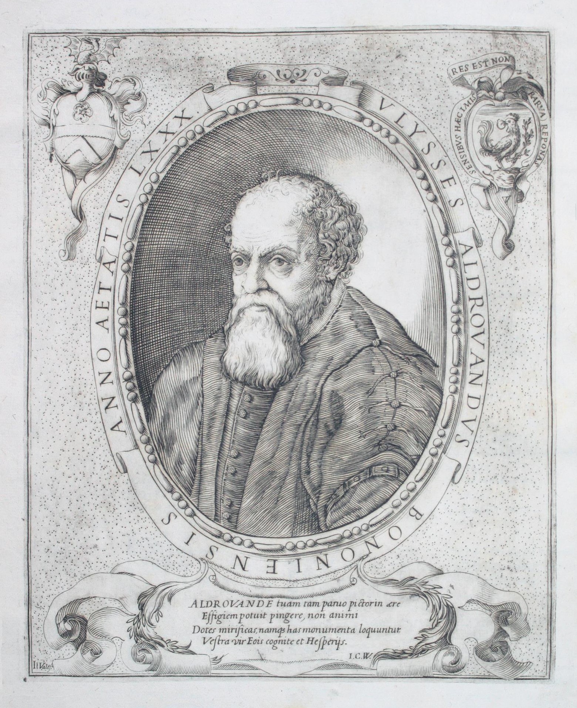
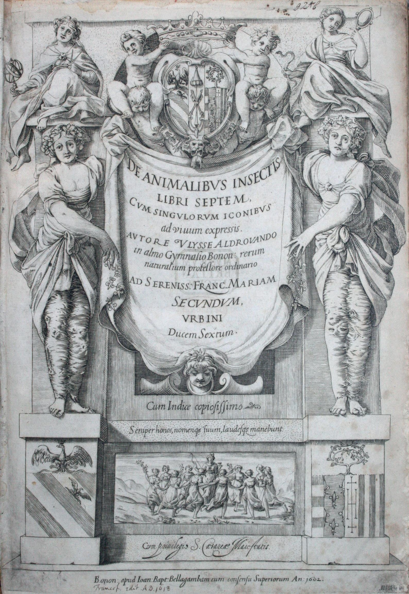
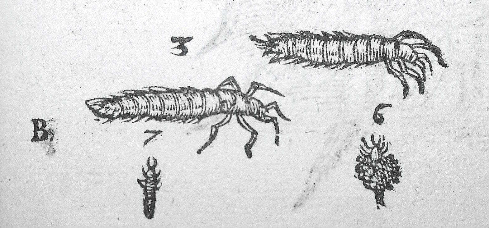
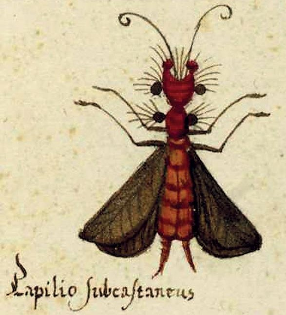
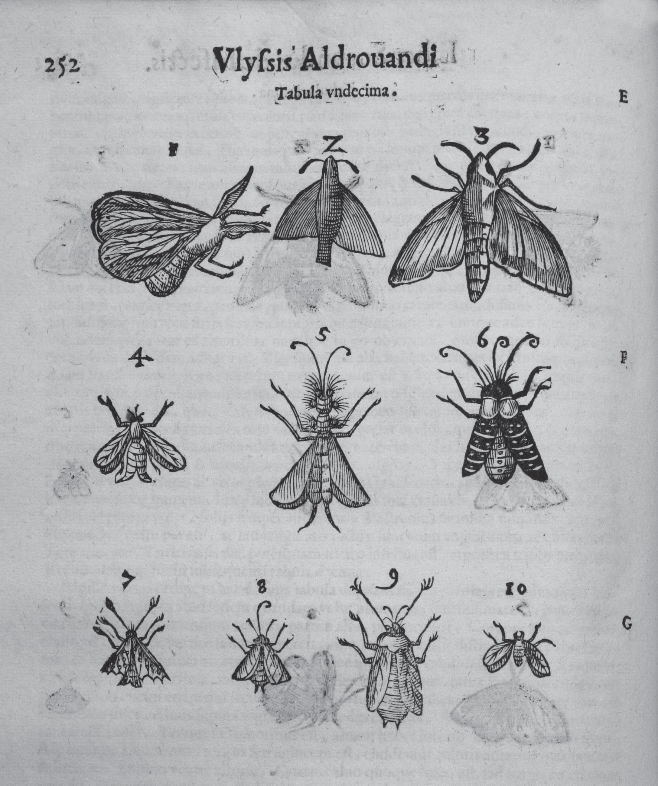
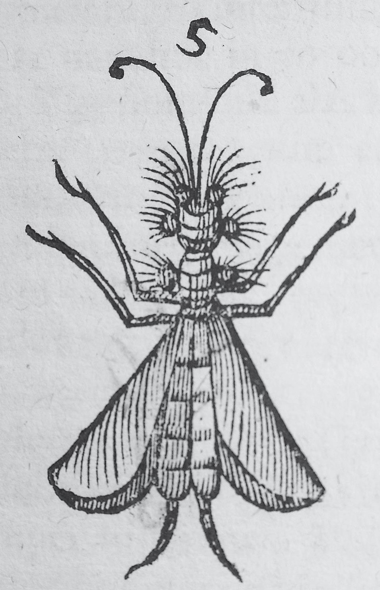

A Journey Through History, Culture & Innovation
Abstract: With his work, De animalibus insectis (1602), Ulisse Aldrovandi occupies a prominent place in the history of entomology. Of particular interest in this volume are the many original descriptions and woodcuts of insects. Partly due to the 'Tavole di animali' [Tables of animals] − illustrations drawn and watercoloured by hand, made by the author previously for the realization of the woodcuts for the printed book − some of them can be identified at genus or species level. For a large number of insects, Aldrovandi's descriptions and illustrations are the oldest in the en-tomological literature. Three adult antlions and one adult green lacewing are recognizable in the book and have already been studied; hypothetical larvae of green lacewings can be added and are recorded here. Among the butterflies and moths, there is another rather enigmatic insect, which could be an owlfly (ascalaphid), though there is some uncertainty due to discrepancies between its colouring in the 'Tavole di animali' and its description in the book. This paper deals with the possible identification of this insect as an ascalaphid and outlines the origin and meaning of the term 'ascalaph'. Historical preamble Despite their medium or large size and showy aspect, owlflies seem to have made their first appearance rather late in entomological literature of the past centuries. Insects apparently related to dragonflies or halfway between dragonflies and butterflies, as in the case of the genus Libelloides Schäffer, 1763, with brightly coloured wings, represented for some of the early taxonomists a puzzle for purposes of classification. Proof of this is the fact that both Giovanni Antonio Scopoli in his Entomologia Carniolica published in 1763 and Michael Denis and Ignaz Schiffermüller in their anonymous work of 1775, usually known as Wiener Verzeichnis, ascribed the current Libelloides macaronius and L. coccajus, described by them, to the genus Papilio Linnaeus, 1758 (Letardi 1995). Not so, however, Linnaeus, who in the 1764 edition of his Systema Naturae had already recognized the true affinity of such insects, placing the current L. longicornis described by him in that year in his (at that time widely comprehensive) genus Hemerobius and later, in the 1768 edition, improving the attribution by assigning it to the genus Myrmeleon, which he instituted in the same work (Pantaleoni & Loru 2018); these authors also present an overview of the 18th century authors who dealt with owlflies. For the subsequent century, see the monograph by van der Weele (1908: 7 ff.).
Despite their medium or large size and showy aspect, owlflies seem to have made their first appearance rather late in entomological literature of the past centuries. Insects apparently related to dragonflies or halfway between dragonflies and butterflies, as in the case of the genus Libelloides Schäffer, 1763, with brightly coloured wings, represented for some of the early taxonomists a puzzle for purposes of classification. Proof of this is the fact that both Giovanni Antonio Scopoli in his Entomologia Carniolica published in 1763 and Michael Denis and Ignaz Schiffermüller in their anonymous work of 1775, usually known as Wiener Verzeichnis, ascribed the current Libelloides macaronius and L. coccajus, described by them, to the genus Papilio Linnaeus, 1758 (Letardi 1995). Not so, however, Linnaeus, who in the 1764 edition of his Systema Naturae had already recognized the true affinity of such insects, placing the current L. longicornis described by him in that year in his (at that time widely comprehensive) genus Hemerobius and later, in the 1768 edition, improving the attribution by assigning it to the genus Myrmeleon, which he instituted in the same work (Pantaleoni & Loru 2018); these authors also present an overview of the 18th century authors who dealt with owlflies. For the subsequent century, see the monograph by van der Weele (1908: 7 ff.).
As regards the 18th century, the following authors are briefly mentioned here: James Petiver, who seems to have been the first, in 1711, to provide a certain illustration of an owlfly, the current L. macaronius (Scopoli, 1763), using the name »Smyrna Butter-bolt« in his Gazophylacium (Petiverus 1711); Jacob Christian Schäffer, who in his monographic study Das Zwiefalter oder Afterjungferchen, published in 1763, dealt with the current L. coccajus ([Denis & Schiffermüller], 1775), calling it »Libelloides seu Libellula spuria« (Schäffer 1763); and Albertus Seba, who in his Locupletissimi rerum naturalium thesauri accurata descriptio, published in 1765, also provided illustrations of owlflies (Seba 1765).
It is therefore in the 18th century, especially the second half, that with the onset of the great period of systematic classification of insects that blossomed in the cultural context of the Enlightenment, the presence of today’s owlflies or ascalaphids appears with certainty in entomological literature. These insects had apparently escaped the consideration of the most eminent entomologists active in England, France and Central Europe in the 16th and 17th centuries, from Moufet to Ray and from Réaumur to Roesel von Rosenhof. Perhaps this was due to the distribution in Europe of owlflies being mostly to the south, in the northern Mediterranean region, and also because they are often localized or rare insects, whose biology and holometabolic development were still unknown at that time.
It is noteworthy, therefore, that Aldrovandi, an Italian author active in the second half of the 16th and the very early 17th century, left an indication in his work of a hypothetical owlfly, even if the elements provided by him give rise to some uncertainty. The following notes aim to focus principally on this particular aspect of his work, a very small tessera in the large mosaic of the encyclopaedic production of this giant in the history of natural sciences and forerunner in the systematic study of insects; but a tessera perhaps of some interest for the history of neuropterology
Ulisse Aldrovandi (Bologna 1522–1605; Fig. 1) is an important representative of scientific humanism of the late Renaissance and one of the greatest naturalists of the 16th century. He was a professor at the University of Bologna for many years and began publishing his monumental work only at the age of 77 (Berlese 1909; Bodenheimer 1928–29; Montalenti 1978; Nicoli Aldini 2005). The many volumes of Aldrovandi’s manuscripts and original watercolour illustrations of naturalistic subjects pertinent to his observations, dating back to the second half of the 16th century and preserved in the University Library of Bologna (BUB 2019), are a precious reference source for a deeper analysis of his way of thinking and working (Alessandrini & Ceragato 2007; Nicoli Aldini 2007, 2008). His work De animalibus insectis libri septem (Aldrovandus 1602; Fig. 2) is the first printed book dedicated entirely to insects and stands out in the history of entomology; after the editio princeps published in 1602, there were several posthumous editions: Frankfurt, 1618, 1623; Bologna 1620, 1634, 1638–44 (Montalenti 1978), testifying to its quality, novelty, and the interest it aroused for posterity. It is in large part an ample and accurate compilation, a true mine of quotations and notions taken from previous authors, especially from classical antiquity, but also containing a classification schema, many original observations and a large number of woodcuts of insects, almost all present in Italy and observed by the author. A certain number of these woodcuts and descriptions are identifiable today at genus or species level, thanks partly to the series of ‘Tavole di animali’ [Tables of animals] drawn and watercoloured by hand, which the author had prepared previously for the future realization of the woodcuts for his zoological books (BUB, Tavole acquerellate di Ulisse Aldrovandi). However, the woodcuts of insects in the printed book are more numerous than the watercolours of insects in the Tables. For a good number of genera or species of insects, Aldrovandi’s descriptions and illustrations are the oldest in entomological literature.
Figure 1. Engraving portrait of Ulisse Aldrovandi, eighty years old, from the first pages of his book De animalibus insectis libri septem (Bononiae 1602) (private library, Bologna).
Figure 2. Ulisse Aldrovandi, De animalibus insectis libri septem (Bononiae 1602): frontispiece.
Of the many insects considered in the De animalibus insectis, only a few are now classified as neuropterans, recognizable at family level. The adults of one green lacewing (Chrysopidae) and three different antlions (Myrmeleontidae) have been briefly treated (Aspöck & Aspöck 2007; Nicoli Aldini 2007), but only one of the latter is identifiable with certainty at genus level, thanks above all to the ‘Tavole di animali’, in which there is also an antlion larva not included in the printed work (Nicoli Aldini 2007). Aldrovandi treated adult antlions, dragonflies and damselflies together, mixing them under the Latin name of ‘Perlae’.
For a more complete analysis of Aldrovandi’s neuropterological work, it should be added that in the printed book there are also two woodcuts of a hypothetical debriscarrying larva of a green lacewing (Chrysopidae), drawn respectively with and without debris and placed among the insects named (in the singular) ‘Xylophthoros’ or ‘Ligniperda’ or ‘Phryganium’, i.e., larvae of the current caddis-flies and psychid moths provided with cases of plant material. Aldrovandi wrote: »Item [habes hic iconem] alterius [Xylophthori] minimi cum suis festucis, et sine festucis nimirum n. 6, et 7« [Similarly [you have here the image] of another [Xylophthoros], very small, with its straws and without straws, i.e., nos. 6 and 7] (Aldrovandus 1602: 763 and woodcuts 6–7; Fig. 3).
Figure 3. Ulisse Aldrovandi, De animalibus insectis (1602), two hypothetic larvae of green lacewings, one of which (right) is a debris-carrier (woodcut at p. 763).
Bodenheimer (1928–29: II, 345) did not attempt an identification, qualifying these illustrations simply as »Insekten-Larven«. The hypothesis that at least one could be a debris-carrying larva of a green lacewing (e.g., a species of the current genus Pseudomallada Tsukaguchi, 1995) is supported by its mouthparts which are forceps-like; the other larva, with similar mouthparts, but without debris and with a slender body, could belong to another green lacewing genus rather than to the same debris-carrying species. Aldrovandi’s neuropterans are also later considered in the work Historiae naturalis de insectis libri tres, published in 1653 (first edition) by the naturalist of Scottish origin, John Jonston (Johannes Jonstonus), who explicitly took into account the many insects previously treated in the De animalibus insectis by Aldrovandi and in the Insectorum sive minimorum animalium theatrum (1634) by Moufet, reproducing descriptions and woodcuts of both these forerunners (Jonstonus 1653).
Figure 4. Tavole acquerellate di Ulisse Aldrovandi, Tavole di animali, tomo VII, carta 119 with, in the centre, the hypothetic owlfly (»Papilio subcastaneus«). From BUB (2019); printed with permission of the Biblioteca Universitaria, Bologna (© BUB); any further reproduction or duplication by any means is forbidden.
Among Aldrovandi’s butterflies and moths, there is an enigmatic insect, perhaps an owlfly, although there is some uncertainty, partly due to the discrepancy between its colouring as it appears in the Tables of animals, where it is referred to as »Papilio subcastaneus« (BUB, Tavole acquerellate di Ulisse Aldrovandi, Tavole di animali, tomo VII, c. 119; Figs 4, 5) and its description in the printed book. The combination of the chromatic features described, which seem only partially compatible with the current genus Libelloides or with other genera of owlflies, is perplexing. Bodenheimer (1928–1929: II, 340), basing himself on the illustration in the printed book, qualified this insect as »(Ascalaphus sp.)«, the use of parentheses denoting doubt. Among the many insects treated by Aldrovandi, this is only one of several insects giving rise to uncertainty regarding identification. Here is Aldrovandi’s Latin description from his book, and a translation:
»Insolentis profecto formae caput obtinet quinto loco pictus, a cuius lateribus duo sunt tubercula rotunda, nigra multis capillamentis nigris hirta, et in extremo alia duo, sed quae eiusdem cum capite sunt coloris nimirum ruberrimi, a cuius quoque lateribus duo alia sunt tubercula nigra, ut priora. Alae ex infima tergoris parte exoriuntur, colore fere nigricante, luteis aureisque lineis et guttis refertae. Alvus est bifurcata, tota lutea rubris zonis interstincta. Pedes et antennae nigricant« [The one illustrated at place five undoubtedly has an unusually-shaped head, with two round black tubercles on the sides, bristling with many black hairs, and another two on the front, which however are of the same colour as the head – i.e., intensely red – on the sides of which there are two more tubercles, black like the first mentioned. The wings sprout from the lower extremity of the back and they are of rather blackish colour, with golden-yellow lines and stains. The abdomen is bifurcated, all yellowish, and spotted here and there with red areas. The legs and the antennae are blackish] (Aldrovandus 1602: 252 f., woodcut 5).
The watercolour of this insect (Fig. 5) and the derived woodcut in the De animalibus insectis (Figs 6, 7) as for other illustrations by Aldrovandi of insects present some fanciful elements, examples of artistic licence. In all likelihood, some features in the picture are not faithful to the model, especially as regards long legs: in the ‘Tavole di animali’, and consequently in the printed book, there are various examples of genera and species, especially butterflies and moths, which are easily recognizable, but illustrated with long legs (instead of short thin legs) based on imagination rather than reality. The uniformly dark colour of the wings of »Papilio subcastaneus« in the same ‘Tavole’ can also be seen in watercolours of other insects with membranous wings (for example, dragonflies identifiable at species level, with hyaline wings), where a silvery colour was probably used which subsequently oxidized, becoming darker; this uniformly dark colouring of the hypothetical owlfly does not, moreover, correspond to its description in the book, which seems to suggest the pigmentation and wing venation of a species of Libelloides, dark but with golden-yellow spots and lines. The very simple “fish bone” wing veins, present in the watercolour and in the woodcut, may also be due to imagination. The colour of the abdomen, both in the watercolour and in the description, yellowish and red, as well as the rest of the body, intensely red with some black tubercles, does not correspond with the colour of a Libelloides and is rather closer to that of the current genus Deleproctophylla Lefèbvre, 1842, if we refer to Italian and Mediterranean owlflies, but the latter genus does not coincide with other descriptive elements. The head and the thorax with thick and erect black hairs, instead, are very suggestive for the attribution to a Libelloides. The abdominal formations could be male cerci, even though imperfectly drawn, if the insect was indeed an owlfly. Was the model of the enigmatic insect perhaps a specimen of Libelloides with the colour of the body (not red) altered and lightened by many years of exposure to light? Or was it an immature adult, with the body incompletely pigmented? Or were errors made by the author of the watercolour? It is not possible to say.
Evidence in favour of the hypothesis that the mysterious insect is in any case a neuropteran is given by Aldrovandi himself further on in the same book, when he comments on the woodcut of an unquestionable Palpares Rambur, 1842 (Nicoli Aldini 2007), erroneously inserted in a table including locusts and mantids: »Papilionis icon est, quam supra dedimus inter papiliones« [It is the image of a butterfly or moth, which we have provided above among them] (Aldrovandus 1602: 414 f., woodcut 5). Bodenheimer (1928–29: II, 345) seemed to identify without doubt this insect as »Ascalaphus sp.«, but erroneously. In fact, among Aldrovandi’s ‘Papiliones’ there is no woodcut of Palpares or other current neuropterans, except the hypothetical owlfly, which also corresponds as regards dimensions. In Aldrovandi’s work, there are generally no precise size indications, but the figures in the tables are roughly to scale between themselves.
Figure 5. Detail of Figure 4, with the insect enlarged. From BUB (2019); printed with permission of the Biblioteca Universitaria, Bologna (© BUB); any further reproduction or duplication by any means is forbidden.
Figure 6. Ulisse Aldrovandi, De animalibus insectis (1602), woodcuts at p. 252 with the hypothetic owlfly in the centre.
A different hypothesis is that proposed as definitive by Roberto A. Pantaleoni (in litt.): the enigmatic insect could be a male Palaeococcus Cockerell, 1894 (Homoptera, Orthezioidea, Margarodidae); in Europe this genus includes one species – P. fuscipennis (Burmeister, 1839) – which corresponds in shape and in the dark-grey colour of the only pair of wings developed (however, Aldrovandi’s insect has two pairs of wings), in the bright red colour of the whole body and blackish colour of the antennae and legs, as well as in the presence of dorsal reliefs on the thorax, while the antennal scapus may seem from either side an anterior tubercle, and the posterior end of the abdomen has two elongated red processes (cf. Gavrilov-Zimin 2018). The chromatic similarities with the watercolour are undoubtedly suggestive, but the presence of only one pair of wings, the rather small overall dimensions of the males of “giant scales”, slightly less than one centimetre, and the absence of the many erect black hairs on the head and thorax are less convincing.
Uncertainty therefore prevails regarding this apparent chimera. Future careful research into Aldrovandi’s entomological manuscripts may be helpful in solving this puzzle.
Figure 7. Detail of Figure 6, with the insect enlarged.
The illustration of this hypothetical owlfly was later (1653) reproduced by Jonston, merely reporting faithfully the description provided by Aldrovandi (Jonstonus 1653: 56, pl. VI n. 5).
If the insect treated by Aldrovandi was in fact an ascalaphid, it would be the earliest representative of this neuropteran family in entomological literature, anticipating by more than a century its unquestionable and well-known illustrations of the 18th century. However, it took over a century and a half for the current term ‘ascalaph’ to appear in entomological literature.
Indeed, this noun appeared scientifically thanks to Johann Christian Fabricius, who in 1775 instituted the genus Ascalaphus (van der Weele 1908; Aspöck et al. 1980). The Latin word derives from the ancient Greek ἀσκάλαφος (askàlaphos − sort of owl or barn owl), the name used by Aristotle for an unspecified nocturnal bird of prey; but Ἀσκάλαφος (Askàlaphos) is, in Greek mythology, a son of Ares, quoted in the Iliad; or, according to other myths, a suitor of Helen, or a son of Acheron transformed by Persephone into an owl (Bonavilla & Marchi 1819; Ferrari 1999). A particularly euphonic and meaningful name, due to its double value in expressing, on the one hand, similarity of the ‘face’ of these lacewings with that of the well-known nocturnal birds of prey and, on the other hand, in transposing mythological figures of ancient Hellas into the world of insects, in the wake of Linnaeus.
Many more decades passed before Alexandre Louis Lefèbvre de Cérisy instituted the family Ascalaphidae in 1842 (van der Weele 1908; Aspöck et al. 2001), and from this family name sprang the more wide-ranging term ‘ascalaphid’, used in many modern languages for indicating all species of this family of voracious predators, whether they are on the wing during the sunniest hours of the day, or on the contrary, in common with owls, have twilight or nocturnal habits.
The author wishes to express his deep gratitude to the staff of the Biblioteca Universitaria di Bologna (BUB), particularly to the Administrative Coordinator Dr Michele Catarinella and the Scientific Coordinator Dr Giacomo Nerozzi, for authorizing reproduction of the c. 119 from the tomo VII of Aldrovandi’s “Tavole di animali” preserved in the BUB, as well as Dr Martina Caroli and Dr Stefania Filippi of the ‘Collezioni Speciali’ Section of the same Library. Very cordial thanks to the colleague and friend Prof. Roberto A. Pantaleoni, sezione di Entomologia del Dipartimento di Agraria, Università degli Studi, Sassari, and Istituto per lo studio degli Ecosistemi del Consiglio Nazionale delle Ricerche, Li Punti, Sassari, for his careful reading of a draft of the present contribution, his useful suggestions and for having drawn the author’s attention to the similarity between the enigmatic insect watercoloured in the “Tavole di animali” and males of Palaeococcus, also providing useful bibliographic sources. Thanks also to Dr Wendy Farrar, SeLdA, Università Cattolica del Sacro Cuore, Piacenza, for her careful linguistic revision and improvement. Finally, heartfelt thanks to Prof. Horst Aspöck, Institute of Specific Prophylaxis and Tropical Medicine, Medical Parasitology, Medical University, Wien, and to Dr Florian Weihrauch, Osmylus Scientific Publishers, Wolnzach, for their accurate revision of the final manuscript.
Aldrovandus U. 1602. De animalibus insectis libri septem, cum singulorum iconibus ad vivum expressis. Ioan. Baptistam Bellagambam, Bononiae [Bologna] Alessandrini A. & Ceragato A. (Eds) 2007. Natura picta. Ulisse Aldrovandi. Editrice Compositori, Bologna
Aspöck H. & Aspöck U. 2007. Illustrations of Chrysopidae in the early entomological literature. Annali del Museo civico di Storia naturale di Ferrara 8 [2005]: 27-44
Aspöck H., Aspöck U. & Hölzel H. 1980. Die Neuropteren Europas. Eine zusammenfassende Darstellung der Systematik, Ökologie und Chorologie der Neuropteroidea (Megaloptera, Raphidioptera, Planipennia) Europas. Vol. 1 & 2. Goecke & Evers, Krefeld
Aspöck H., Hölzel H. & Aspöck U. 2001. Kommentierter Katalog der Neuropterida (Insecta: Raphidioptera, Megaloptera, Neuroptera) der Westpaläarktis. Denisia 02: 1-606
Berlese A. 1909. Gli insetti, loro organizzazione, sviluppo, abitudini e rapporti con l’uomo. Vol. 1. Società Editrice Libraria, Milano
Bodenheimer F.S. 1928-1929. Materialien zur Geschichte der Entomologie bis Linné. Vol. 1 & 2. W. Junk, Berlin
Bonavilla A. & Marchi M.A. 1819. Dizionario etimologico di tutti i vocaboli usati nelle arti, scienze e mestieri che traggono origine dal Greco. Vol. 1. Tipografia G. Pirola, Milano
BUB (Biblioteca Universitaria Bologna). 2019. Tavole acquerellate di Ulisse Aldrovandi [digital version]. Online on the internet, URL (13. viii.2019): http://www.filosofia.unibo.it/aldrovandi/pinakesweb/main.asp Ferrari A. 1999. Dizionario di mitologia greca e latina. UTET, Torino
Gavrilov-Zimin I.A. 2018. Ontogenesis, morphology and higher classification of archaeococcids (Homoptera: Coccinea: Orthezioidea). Zoosystematica rossica 2018, supplement 2: 1-260
Jonstonus J. 1653. Historiae naturalis de insectis libri III, de serpentibus et dracon. Libri II. Joannem Jacobi fil. Schipper, Amstelodami [Amsterdam]
Letardi A. 1995. Ascalafidi: un gruppo di insetti da rincorrere per prati, musei e biblioteche (Neuroptera, Ascalaphidae). Bollettino dell’Associazione Romana di Entomologia 49 (3-4) [1994]: 45-54
Montalenti G. 1978. Aldrovandi, Ulisse. In: Dizionario Biografico degli Italiani, Vol. 2: 118-124. Istituto della Enciclopedia Italiana, Roma
Nicoli Aldini R. 2005. Ricordando Ulisse Aldrovandi nel quarto centenario della morte. APOidea, Rivista italiana di Apicoltura, 2: 158-161
Nicoli Aldini R. 2007. Ulisse Aldrovandi and Antonio Vallisneri: the Italian contribution to knowledge of Neuropterous Insects between the 16th and the early 18th centuries. Annali del Museo civico di Storia naturale di Ferrara 8 [2005]: 9-26
Nicoli Aldini R. 2008. Apis amphibia, Cicada, Cimex, Cimices sylvestres, Tipulae… The insects now known as Hemiptera, in Ulisse Aldrovandi’s De Animalibus Insectis (1602). Bulletin of Insectology 61: 103-105
Pantaleoni R.A. & Loru L. 2018. The spurious dragonfly: the intricate nomenclatural problems regarding the names Libelloides and libelluloides (Neuroptera Ascalaphidae et Myrmeleontidae). Zootaxa 4387 (3): 524-540
Petiverus J. 1702-1711. Gazophylacii naturae & artis decades X. [Decades 7 & 8 (1711): 5-8] C. Bateman, Londinii [London],
Seba A. 1765. Locupletissimi rerum naturalium thesauri accurata descriptio et iconibus artificiosissimis expressio per universam physices historiam. Vol. 4. H.C. Arksteum et H. Merkum, et Petrum Schouten, Amstelaedami [Amsterdam]
Schäffer J.C. 1763. Das Zwiefalter oder Afterjungferchen. Zweyte Auflage. J.L. Montag, Regensburg
van der Weele H.W. 1908. Ascalaphiden monographisch bearbeitet. Collections Zoologiques du Baron Edm. de Selys Longchamps. Catalogue systématique et descriptif 8: 1-326, pls 1-2. Hayez, Bruxelles
DOI: 10.5281/zenodo.3569415
Our user-friendly interface allows you to seamlessly navigate between articles and visualize their locations on an interactive map, while our commitment to editorial excellence ensures that every piece is engaging, informative, and accurate. The Discovering Bologna team has meticulously crafted every typographic detail, from font families and sizes to colors, margins, aspect ratios, and captivating images with captivating captions, to truly reflect the graphic theme and ambiance of this captivating city.
Join us on this digital adventure and explore the wonders of Bologna like never before, all from the comfort of your own home. Discovering Bologna: Unraveling the secrets of the city, one story at a time.